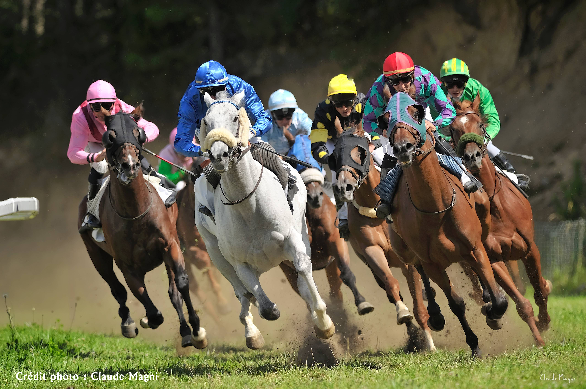
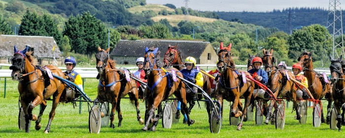

L'hippodrome de Toulouse

- Nom : Hippodrome de Toulouse
- Statut : Hippodrome
- Date de création : En 1866
- Revenu : Plus que l'hippodrome de Biarritz !
- Compétition : Les meilleurs sont ici tous les vendredis :)
Évènements organisés
- Grande belette de Toulouse !!
- Coupe de quidditch à cheval
Description
L'hippodrome de la Cépière se situe dans le quartier de la Cépière à Toulouse dans la Haute-Garonne et à proximité du Zénith. La mairie de Toulouse est propriétaire de l'hippodrome et loue les terrains à la Société Sportive des Courses de Toulouse. Situé à seulement 4 kilomètres de la Place du Capitole, sur une aire de 34 hectares, il est l'un des plus beaux de France. Il fut inauguré en 1866.

- Vainqueur : Kenny Baker
- Second : Peter Dinklage
Et oui ! Encore une fois le célèbre Kenny a remporté la victoire ce dimanche 1 avril face à son nouveau rival Peter. Malheureusement pour ce dernier le repas à la cantine fût trop consistent ce qui le rendit trop lourd pour son poney de premier choix.

Encore une belle journée pour nos chatelain préférée. On ne se lassera donc jamais de voir ces riches personnes gambader sur les chevaux hors de prix pour nous le bas peuple. Quelle chance d'avoir pu apercevoir en ce lundi le roi Aragorn en compagnie de Sauron le seigneur des ténèbres, On ne manquera pas de rappeler leur dernier conflit en terre du milieu qui avait pourtant mal tourné pour notre Saurichou adoré ...
Waaaaahouuuu ... encore une super journée dans la boue à regarder ces beaux étalons, quelle chance d'avoir été choisie pour servir de paillasson
Pffff.. tant de niaiserie dans ces commentaires, on se croirait en pleine télé réalité. Et l'autre cruche qui se trouve heureuse d'avoir servi de paillasson ... vraiment déplorable.
Raaaah le jaloux. Comme il est trop dégouté de ne pas avoir été choisie pour un tel honneur. Allez retourne dans ta misére bouseux !
Youhou !!! vive mon petit Kennychou adoré ! Je t'aime Kennyyyyyy
Bouuuh ! Encore une victoire volé par ce nabot de Baker, il ne mérite pourtant pas de gagner face au géant Peter Dinklage
Il n'y a eu aucune triche ! Alors arrête de semer ton venin partout